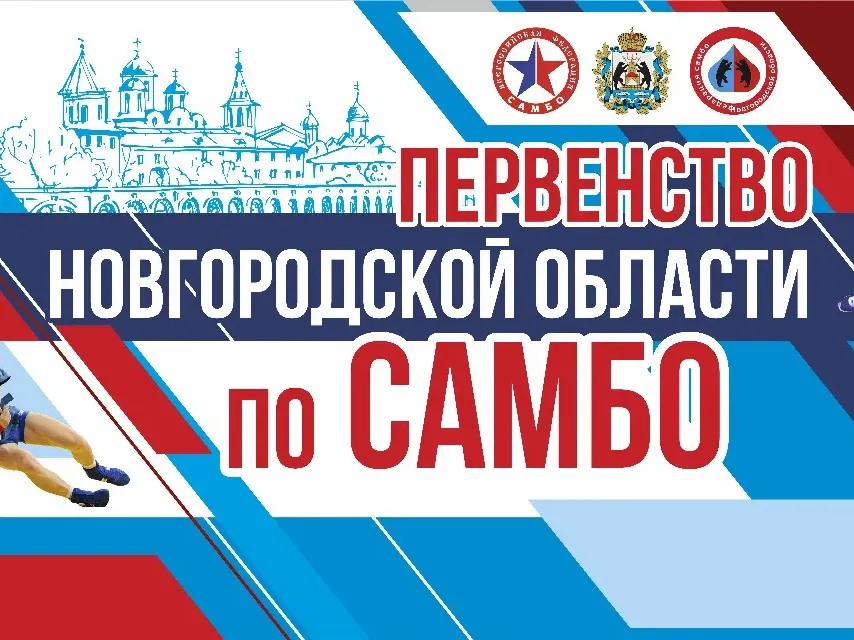
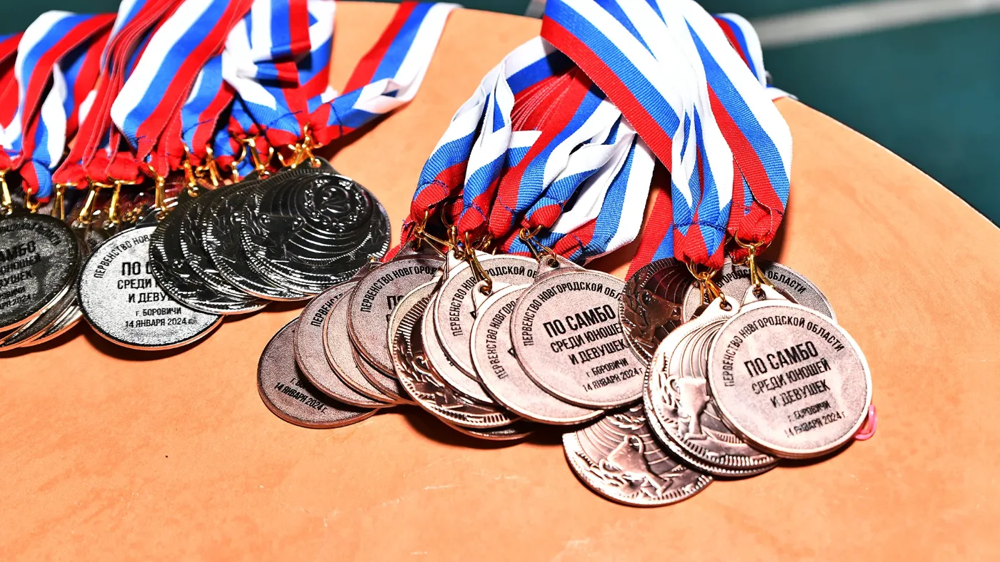
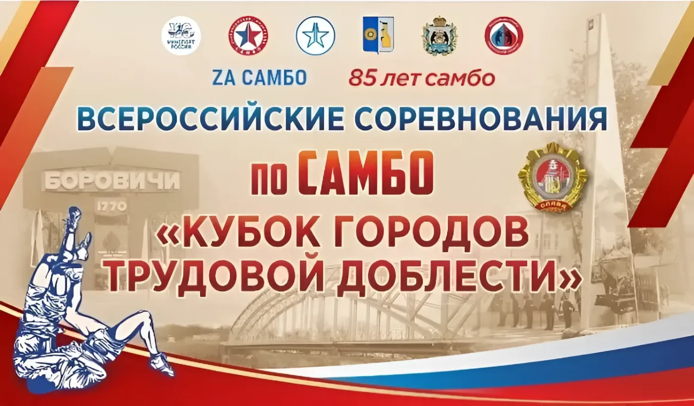
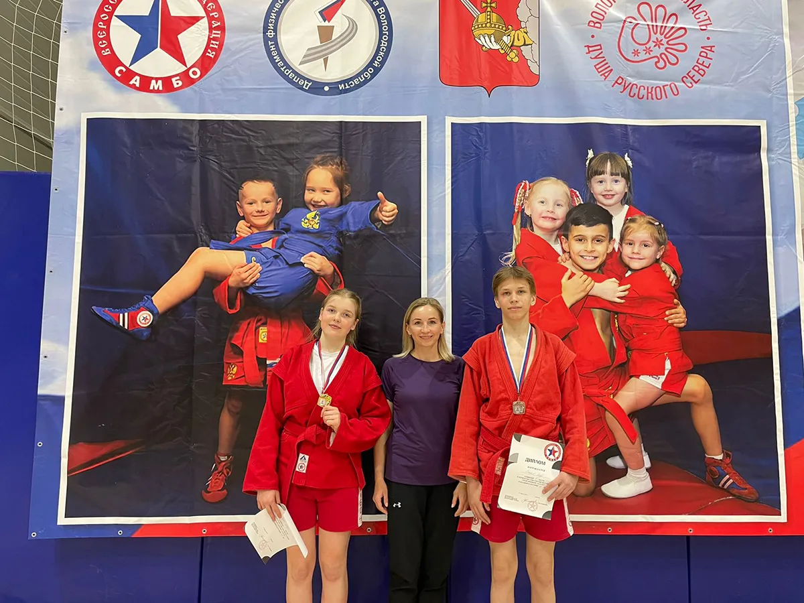
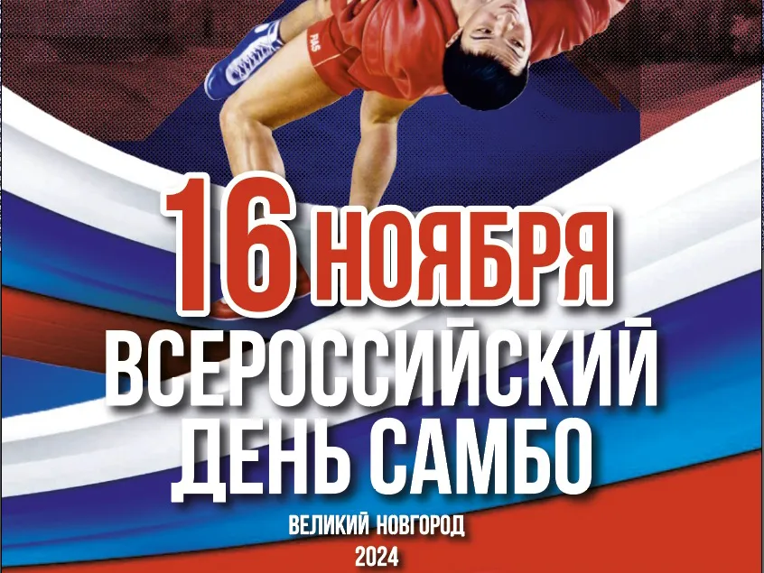
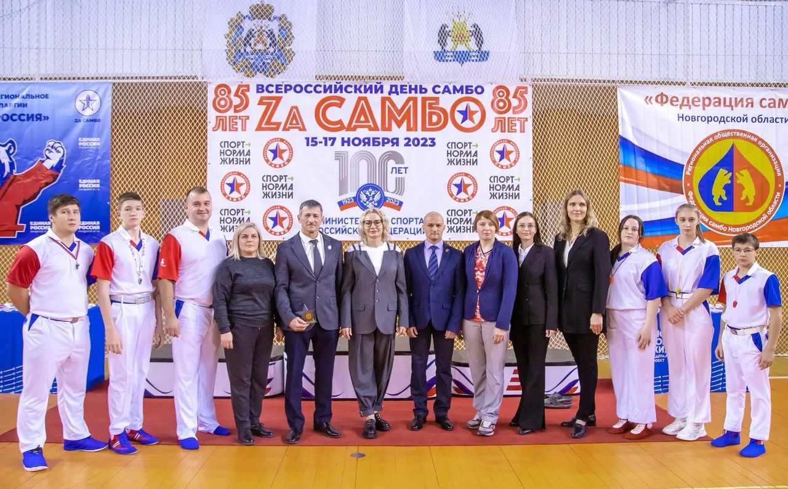

Новгородской области
Календарный план и архив по годам: положения, отчёты, протоколы и фото
Выберите год. Для каждого турнира — положение, отчёт или протокол и фотографии, как только они появляются. Календарный план на 2026 год готовится.





